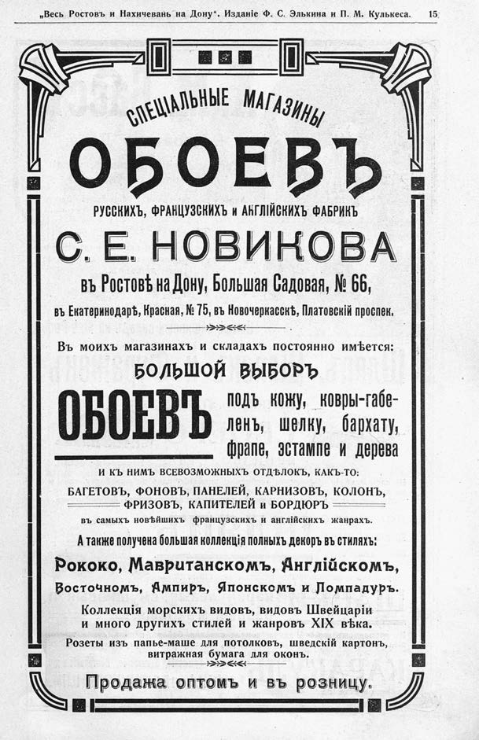

Лист источника 21
Скан

Распознанный текст
„Весь Ростовъ и Нахичеванъ на Дону“. Изданіе Ф. С. Элькина и П. М. Кулькеса. 15
СПЕЦІАЛЬНЫЕ МАГАЗИНЫ
ОБОЕВЪ
РУССКИХЪ, ФРАНЦУЗСКИХЪ и АНГЛІЙСКИХЪ ФАБРИКЪ
С. Е. НОВИКОВА
въ Ростовѣ на Дону, Большая Садовая, № 66,
въ Екатеринодарѣ, Красная, № 75, въ Новочеркасскѣ, Платовскій проспек.
Въ моихъ магазинахъ и складахъ постоянно имѣется:
БОЛЬШОЙ ВЫБОРЪ
ОБОЕВЪ подъ кожу, ковры-габе-
ленъ, шелку, бархату,
фрапе, эстампе и дерева
И КЪ НИМЪ ВСЕВОЗМОЖНЫХЪ ОТДѢЛОКЪ, КАКЪ-ТО:
БАГЕТОВЪ, ФОНОВЪ, ПАНЕЛЕЙ, КАРНИЗОВЪ, КОЛОНЪ,
ФРИЗОВЪ, КАПИТЕЛЕЙ И БОРДЮРЪ
въ самыхъ новѣйшихъ французскихъ и англійскихъ жанрахъ.
А также получена большая коллекція полныхъ дехоръ въ стиляхъ:
Рококо, Мавританскомъ, Англійскомъ,
Восточномъ, Ампиръ, Японскомъ и Помпадуръ.
Коллекція морскихъ видовъ, видовъ Швейцаріи
и много другихъ стилей и жанровъ XIX вѣка.
Розеты изъ папье-маше для потолковъ, шведскій картонъ,
витражная бумага для оконъ.
Продажа оптомъ и въ розницу.